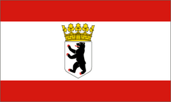
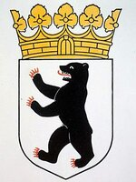

|  |

|
- Los Angeles, United States (1967)
- Madrid, Spain (1988)
- Istanbul, Turkey (1989)
- Warsaw, Poland (1991)
- Moscow, Russia (1991)
- Brussels, Belgium (1992)
- Budapest, Hungary (1992)
- Tashkent, Uzbekistan (1993)
- Mexico city, Mexico (1993)
- Jakarta, Indonesia (1993)
- Beijing, China (1994)
- Tokyo, Japan (1994)
- Buenos Aires, Argentina (1994)
- Prague, Czechia (1995)
- Windhoek, Namibia (2000)
- London, England (2000)
|